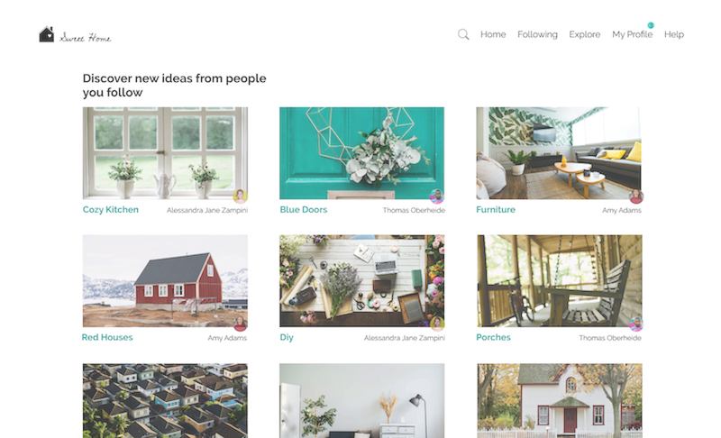
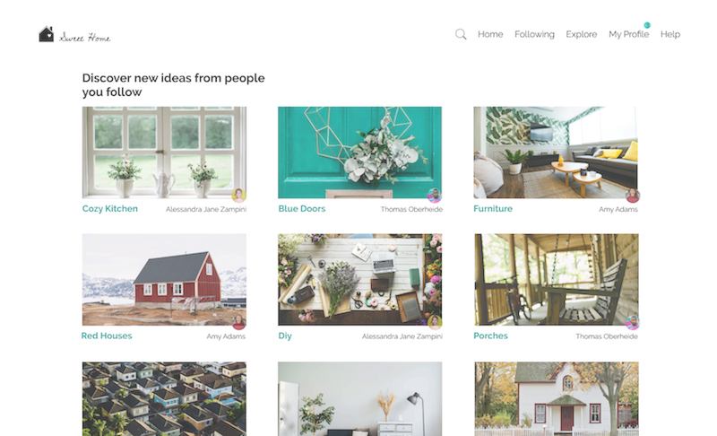

Sweet Home
Sweet Home is a web based app centered around home improvement. Users can get inspired through a catalogue of pictures, store that information found, and lastly use it as a vessel to share their ideas.
View Prototype
Design roles
- UX Design
- Visual Design
- Brand & Identity
Design Deliverables
- User Surveys
- Personas
- Competitive Analysis
- Concept & Identity
- User Stories & Flows
- Paper Prototype
- Wire-Frames
- User Testing
- Visual Design
Design Tools
- Figma
- inVision
Problem
Users wanted a web application to browse, save, organize, create, and share information specifically related to home improvement.
Solution
Home Away is a place for home lovers to be inspired and also a social network. Users are able to browse different ideas from friends or search terms. They can then save and organize ideas they like. The final part is the capacity to share and also communicate opinions with friends and family.

Competitive Analysis
The first step in my research process was to learn about other competitors in the market. I studied Google Drive, Pinterest, and Dropbox to assess strengths weaknesses opportunities and threats (Swot Analysis). I then found an area that there was an opportunity for a new competitor to enter which led me to my idea of Home Away. Some key points I took away for my app were: Visually appealing (picture organization) Focused and organized Free storage Ability to collaborate


User Research
Next, I created and distributed a survey to find out if my idea for Home Away would appeal to the general public. Most people are familar with and using cloud storage apps. They also do work on their homes. 86% would be open to using a new home improvement application, and the majority of people surveyed already get most of their home improvement inspiration from the internet. These users want to find content on the web, save it, and organize it. Some of the users would like to share and collaborate with others on this as well. Of these participants, a lot of them said they use these apps when they want to start a new project. All of this research leads me to believe a home improvement cloud storage application would be successful.
User Personas
The personas represented home owners who are interested in improvement.


User Flows
The next step in the process was for me to figure out how the users were going to complete these user stories. This is where I drew out the User Flows.

Wireframes
The user flows helped me to set up my wireframes so I could visualize how the site would be set up and how it would work.


Branding
While working on the branding I was looking to show loyalty and trust while also being refreshing and friendly.

Prototypes


 

User Testing
Organizing content: During my first round of testing users had a hard time finding where to save and organize content. I needed to add the move button to an obvious location.

User Testing
Cursive Typeface: Users had a hard time reading the cursive when it was anywhere but the logo. I ended up removing that typeface from everything else.


Conclusion
During the creation of Sweet Home, I found user testing really helpful. I learned that a lot of designs that I like the look of might not be the most functional or might not be appealing to other people. I think the User survey was really helpful in starting off the project and deciding what to do, and preference tests and usability tests were really helpful along the way. I learned a lot about design in general and what is accepted among the design community. Overall, I think the most important thing I realized was how important spacing and size and consistency are to help the design look polished and professional. I needed to seek out a lot of feedback on this project, and I got used to taking all the opinions with a grain of salt and also combining other people’s ideas with my own to make the best product.